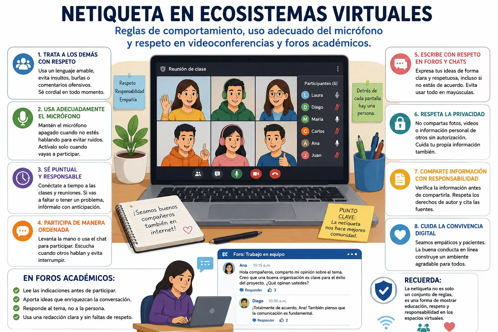

Netiqueta en ecosistemas virtuales
La netiqueta es el conjunto de normas y recomendaciones que ayudan a mantener un comportamiento adecuado cuando utilizamos internet y diferentes espacios digitales. Su importancia ha aumentado con el uso de plataformas educativas, videoconferencias, chats y foros académicos. Aunque las personas no estén reunidas físicamente, es necesario mantener el respeto y actuar de manera responsable.
Una de las principales reglas de la netiqueta es tratar a los demás con educación. En los espacios virtuales se deben evitar los insultos, las burlas, los comentarios ofensivos y cualquier mensaje que pueda hacer sentir mal a otra persona. Es importante recordar que detrás de cada cuenta o dispositivo hay una persona que merece ser tratada con respeto.
Durante una videoconferencia también es necesario tener buenos hábitos. Antes de comenzar, es recomendable comprobar que el micrófono y la cámara funcionen correctamente. Cuando otra persona está hablando, lo mejor es mantener el micrófono apagado para evitar ruidos que puedan interrumpir la explicación. El micrófono debe activarse solamente cuando sea necesario participar.
La puntualidad también forma parte de un buen comportamiento en los espacios virtuales. Llegar a tiempo a una clase o reunión demuestra responsabilidad y respeto por el tiempo de los demás. Si existe algún problema que impida conectarse o participar, es recomendable comunicarlo al docente o responsable de la actividad.
En los foros académicos se debe prestar atención a la manera en que se escriben los mensajes. Es importante expresar las opiniones de forma clara y respetuosa, incluso cuando no se está de acuerdo con otra persona. También se debe evitar escribir todo en mayúsculas, ya que en internet puede interpretarse como si se estuviera gritando.
Otro aspecto importante es respetar la privacidad. No se deben compartir fotografías, grabaciones, conversaciones o datos personales de otras personas sin su autorización. También es necesario tener cuidado con la información que se publica en internet, porque algunos contenidos pueden permanecer disponibles durante mucho tiempo y afectar la privacidad de quienes aparecen en ellos.
La netiqueta también implica ser responsable con la información que se comparte. Antes de enviar una noticia, imagen o enlace, es conveniente comprobar que sea verdadera y que provenga de una fuente confiable. En el ámbito académico, además, se deben respetar los derechos de autor y reconocer a los creadores cuando se utilizan sus trabajos.
En conclusión, la netiqueta permite que los espacios virtuales sean más respetuosos, organizados y agradables para todos. Utilizar correctamente el micrófono, participar de manera ordenada, respetar las opiniones, cuidar la privacidad y comunicarse con educación son acciones sencillas que ayudan a mejorar la convivencia digital. Una buena conducta en internet demuestra responsabilidad y respeto hacia los demás.
